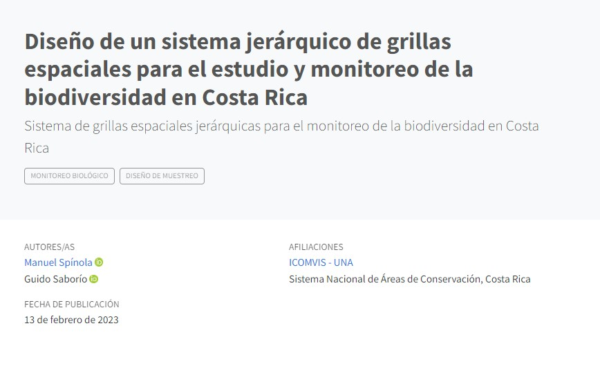

In 2019 we had the opportunity to place a camera trap to try to observe the activity of a black-headed bushmaster.
In a collaboration with Professor Manuel Spínola, we design a grid system that cover all continental territory of Costa Rica
